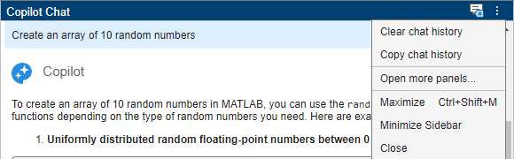

Write Effective Prompts for MATLAB Copilot
A prompt is text that you submit to a generative AI tool as a request to perform a task. Typically, a prompt is a question or statement that you write using natural language. In MATLAB® Copilot, you can submit prompts using the Ask Copilot text box in the Copilot Chat panel, the Editor, the Live Editor, and the Command Window.
Prompt engineering is the process of crafting effective prompts and guiding an AI tool to generate a solution. To maximize the effectiveness of MATLAB Copilot, it is important to write clear and detailed prompts. You might need to iterate through several prompts and responses to generate the expected solution.
In the Copilot Chat panel, Copilot Chat returns conversational responses that can include both natural language descriptions and formatted code (with comments). While you can submit any kind of prompt, Copilot Chat is well suited to respond to prompts that ask for explanations, such as:
Explain why some matrices cannot be inverted
In the Editor, the Live Editor, and the Command Window, Copilot returns only formatted code (with comments). When using Copilot in these panels, it is a good practice to write prompts that are focused on writing code, such as:
Check if matrix can be inverted and invert it
Consider following these best practices for writing effective prompts.
Be Specific
When you write a prompt, clearly specify what you want Copilot to do. Clarify vague prompts by providing detailed instructions.
For example, here is a vague prompt:
Create a plot
Instead, ask Copilot to create a specific kind of plot:
Create a sine wave plot from 0 to 2*pi with a title and
labels
Describe Inputs and Outputs
Provide descriptions of the inputs and outputs that you expect. You can specify data types and sizes. You can also just describe the inputs and outputs in words. Such details help Copilot understand your requirements.
For example:
Generate a function that takes a numeric array and returns its mean and
standard deviation
Break Down Complex Tasks
If your request involves multiple steps, break it down into simpler parts. You can submit the parts as separate prompts or as a paragraph where you describe each part in a separate sentence.
For example:
First, generate code to read data from a CSV file. Then, plot the data. Add a
title, labels, and a legend.
Give Feedback and Describe Mistakes
Chat with Copilot in the Copilot Chat panel as though it were a colleague helping you with a project. When Copilot Chat generates a response, you can follow up with a prompt that gives feedback. Tell Copilot which parts of the response helped you and which parts did not. If Copilot made a mistake, describe it in your follow-up prompt.
For example, ask Copilot to show you how to transpose a table.
Show me how to transpose a table
The response might include code to generate a sample table followed by a call to the
transpose function or operator. However,
transpose operates on vectors and matrices only.
In this case, when you run the generated code, the result is an error message that
suggests using the rows2vars function instead. So, you can write a
follow-up prompt that describes the mistake. In your prompt, you can ask Copilot to work
with the code or data it generated in its previous response.
transpose does not support tables. Show me how to use rows2vars on the sample
table from the previous response.
Iterate, Refine, and Validate
If the generated response is not what you expect, refine your prompt and try again. Verify that the output is a valid result.
Rewrite your prompt, adding more details as needed.
Run generated code and review its output.
Check that the generated code or text aligns with the documentation.
If Copilot generated code that you do not understand, ask Copilot to explain it in more detail. If Copilot has not already provided a line-by-line explanation, ask for one.
Highlight the code, right-click and select Copilot > Explain Code for an explanation from Copilot.
Describe Presentation of Results
Tell Copilot how you want it to present results. For instance, you can tell Copilot to present results as a plot, an array, a table, or some other data structure. You can also tell Copilot that you want the results written to a file.
For example, suppose that a previous Copilot response in the Copilot Chat panel returned results as a table. You can request a different presentation of the results:
Return the results from the previous response as a timetable with variables
named "Signal" and "Status", sampled at 50 Hz. Then write the timetable to a CSV file
named mysignals.csv.
Clear Chat History
There are two situations where it is a good practice to clear the chat history:
Before you start a conversation on a new topic.
If the quality of the responses declines. Such a decline might happen when the chat history gets long.
First, save anything of value from your current chat session. Save generated code that
you want to preserve. You can also save the entire chat history by selecting the
Copy chat history option from the Copilot Chat
actions menu at the upper right corner of the Chat panel. Then, to clear the
chat history, click the Clear chat history button, also near the
upper right corner of the panel.

The chat history does not persist between chat sessions.
Try Example Prompts
Copilot provides example prompts at the start of a chat session. Here are some example prompts to help you to explore Copilot capabilities:
Create a line plot that displays multiple sets of x and y dataRoll two six-sided dice 1000 times and plot the sum of each rollCreate a 3D bar graph of data from the magic functionGenerate noisy data from a cubic polynomial, preprocess the data, and plot the resultsSolve the linear equations with coefficients A = [2, 4; 1, 3] and constants B = [8; 5] and display the results